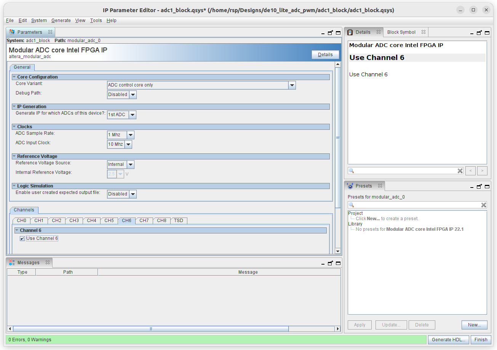

การใช้งานวงจร ADC ภายในชิป MAX 10 FPGA#
Keywords: Intel / Altera MAX 10 FPGA, DE10-Lite FPGA Board, ADC, PWM, Analog Input
ความรู้และทักษะพื้นฐานที่เกี่ยวข้อง
- อิเล็กทรอนิกส์ (Electronics): วงจรแบ่งแรงดันสำหรับสร้างสัญญาณแอนะล็อก ตัวแปลงสัญญาณแอนะล็อกเป็นดิจิทัล
- การออกแบบวงจรลอจิก (Logic Design): การใช้งาน ADC IP Core และ PLL IP Core ภายในชิป Intel MAX 10 FPGA
- การประมวลผลสัญญาณดิจิทัล: การสุ่มค่าจากสัญญาณแอนะล็อกและการสร้างสัญญาณ PWM
- การวัด (Measurement): การวัดสัญญาณด้วยออสซิลโลสโคป
- การเขียนโค้ดและซอฟต์แวร์ (Software/Coding): การเขียนโค้ดด้วย VHDL และใช้งานซอฟต์แวร์ Intel Quartus Prime (Lite Edition)
▷ วงจร ADC#
ชิป MAX 10 FPGA มีวงจร 12-bit SAR ADC (Analog-to-Digital Converter) อยู่ภายใน
และรับสัญญาณอินพุต-แอนะล็อกที่ช่องสัญญาณ ADC_IN0 ~ ADC_IN5
ของคอนเนกเตอร์ Arduino Shield บนบอร์ด (แรงดันไฟฟ้าอยู่ในช่วง 0V ~ 5V)
สัญญาณอินพุตจะถูกลดระดับแรงดันลงครึ่งหนึ่ง โดยใช้วงจรแบ่งแรงดัน และมีวงจรออปแอมป์ (OpAmp)
ซึ่งทำหน้าที่เป็น Voltage Buffer
ดังนั้นแรงดันไฟฟ้าที่ผ่านเข้าไปยังวงจร ADC1 ภายในชิป MAX 10 FPGA จะอยู่ในช่วง 0V ~ 2.5V
และใช้เลือกใช้แรงดันอ้างอิง (Analog Reference Voltage) ภายใน Vref = 2.5V
แต่ขา ADC_IN6 และ ADC_IN7 ไม่ได้ต่อใช้งาน
การทำงานของวงจร ADC ใช้ความถี่ เพื่อกำหนดจังหวะการทำงาน ได้สูงสุด 10MHz และสามารถอ่านและแปลงค่าสัญญาณได้อัตราสูงถึง 1MSamples/s
ในการใช้งานวงจร ADC ภายในชิป MAX 10 จะต้องมีการสร้างวงจรจาก IP Cores โดยใช้ซอฟต์แวร์ Quartus Prime และเลือกชนิดของวงจรจาก IP Catalog ได้แก่
ALTPLLรับสัญญาณ Clock (50MHz) จากบอร์ด แล้วนำไปป้อนเข้าที่ขาinclk0เพื่อสร้างสัญญาณ Clock ที่ขาเอาต์พุตc0ให้มีความถี่ 50MHz และที่ขาเอาต์พุตc1ให้มีความถี่ 10MHz (เจาะจงใช้กับวงจร ADC) ตามลำดับ แต่ทั้งสองสัญญาณมีเฟสตรงกัน (in-phase)ADCเป็นวงจรภายในชิป MAX 10 มีช่องสัญญาณแอนะล็อก-อินพุต 8 ช่อง จากภายนอก ผู้ใช้จะต้องตั้งค่าใช้งานให้ถูกต้อง
ผลลัพธ์จากการตั้งค่าและสร้างวงจรจก IP Core จะได้เป็นโค้ด VHDL หรือ Verilog เพื่อนำมาใช้ในโปรเจกต์
ข้อสังเกต: บอร์ด DE10-Lite มีสัญญาณอินพุต 10MHz บนบอร์ด และสามารถนำมาใช้เป็นสัญญาณ ADC Clock ได้เช่นกัน แต่ในตัวอย่างนี้ ได้เลือกใช้ ALTPLL เพื่อสาธิตการสร้างสัญญาณ Clock ภายในชิป FPGA จากสัญญาณอินพุตความถี่ 50MHz จากภายนอก
▷ การใช้งาน ALTPLL IP Core#
ขั้นตอนการสร้างวงจร ALTPLL มีดังนี้
- เลือก Library ➤ Basic Functions ➤ Clocks & PLLs ➤ PLL ➤ ALTPLL
- ตั้งชื่อวงจรสำหรับ ALTPLL ที่ต้องการสร้าง และเลือกไดเรกทอรีสำหรับการจัดเก็บไฟล์
- กำหนดค่าความถี่สำหรับสัญญาณอินพุต
inclk0ให้เท่ากับ 50MHz และค่าความถี่สำหรับขาเอาต์พุตc0และc1ให้เท่ากับ 50MHz และ 10MHz ตามลำดับ มีค่า Duty Cycle = 50% และ Phase Shift = 0.0 deg - กดปุุุ่มเพื่อสร้างโค้ด HDL เพื่อนำไปใช้กับโปรเจกต์
ไฟล์
.qip(Quartus Prime IP File) จะต้องถูกนำไปใส่ในโปรเจกต์ด้วย
รูป: การสร้างวงจร ALTPLL IP Core ใน IP Catalog เพื่อนำมาใช้ในโปรเจกต์
รูป: ตั้งค่าความถี่ของสัญญาณอินพุต ใน MegaWizard Plug-in Manager
รูป: ตั้งค่าความถี่ของสัญญาณเอาต์พุต c0 เท่ากับ 50.00 MHz
รูป: ตั้งค่าความถี่ของสัญญาณเอาต์พุต c1 เท่ากับ 10.00 MHz
รูป: สรุปการตั้งค่า ALTPLL ก่อนการสร้างโค้ด HDL
รูป: การเพิ่มไฟล์ .qip ในโปรเจกต์ โดยอัตโนมัติ
▷ การใช้งาน ADC IP Core#
ขั้นตอนการสร้างวงจร ADC มีดังนี้
- เลือก Library ➤ Processors & Peripherals ➤ Peripherals ➤ Modular ADC Core ...
- ตั้งชื่อวงจร ADC ที่ต้องการสร้าง และเลือกไดเรกทอรีสำหรับการจัดเก็บไฟล์
- เลือกโหมดการทำงานแบบ ADC Control Core Only ตั้งค่า ADC Sample Rate = 1MHz และ ADC Input Clock = 10MHz เลือกใช้ Analog Reference Voltage = Internal
รูป: เริ่มต้นการสร้างวงจรจาก Modular ADC Core Intel FPGA IP

รูป: ตั้งชื่อวงจรที่ต้องการสร้างจาก ADC IP Core
รูป: เลือกโหมดการทำงานเป็นแบบ ADC Control Core Only สำหรับ 1st ADC

รูป: คลิกเลือก User Channel 1 (ADCIN[1]) จนถึง User Channel 6 (ADCIN[6])
เพื่อเปิดใช้งาน
รูป: กดปุ่ม Generate เมื่อได้ตั้งค่าการใช้งานแล้ว
รูป: การแจ้งเตือนให้ผู้ใช้เพิ่มไฟล์ .qsys ในโปรเจกต์ เพื่อใช้งาน ADC IP Core
ที่ถูกสร้างเป็นวงจรแล้ว
▷ โค้ดสาธิตการสร้างสัญญาณ PWM จำนวน 2 ช่องเอาต์พุต#
ถัดไปเป็นตัวอย่างโค้ด VHDL สำหรับวงจรที่มีชื่อว่า de10_lite_adc_pwm
สาธิตการใช้วงจร altpll_block และ adc1_block (สร้างจาก Altera IP Cores
ในขั้นตอนที่ได้นำเสนอไปแล้ว) เพื่อใช้ในการแปลงระดับแรงดันของสัญญาณแอนะล็อก-อินพุต
ให้เป็นข้อมูลขนาด 12 บิต
ในตัวอย่างนี้จะเลือกใช้เพียง 2 ช่องอินพุต และสลับการเลือกใช้ช่องอินพุต ได้แก่ ADC_AN0
(ADCIN[1]) และ ADC_AN1 (ADCIN[2])
แล้วนำค่าที่อ่านได้ไปใช้ในการกำหนดค่า Duty Cycle ของสัญญาณ PWM จำนวน 2 ช่อง ตามลำดับ
แต่มีข้อสังเกตว่า ถ้าค่า Duty Cycle ของสัญญาณ PWM ช่องแรกเพิ่มขึ้น สัญญาณ PWM จะลดลง
(เปลี่ยนแปลงในทิศทางตรงกันข้าม)
การสร้างสัญญาณ PWM จะใช้ตัวนับขนาด 12 บิต นับค่าเริ่มต้นจาก 0 ถึง 4095 แล้ววนซ้ำ
วงจรตัวนับทำงานด้วยความถี่ 50MHz ดังนั้นจะได้ความถี่ของสัญญาณ PWM เท่ากับ
50MHz / 4096 = 12,207.03 Hz
LIBRARY IEEE;
USE IEEE.std_logic_1164.ALL;
USE IEEE.numeric_std.ALL;
ENTITY de10_lite_adc_pwm IS
PORT (
clk : IN STD_LOGIC; -- 50 MHz system clock input
reset_n : IN STD_LOGIC; -- active-low asynchronous reset
pwm : OUT STD_LOGIC_VECTOR(1 DOWNTO 0) -- 2-channel PWM output
);
END de10_lite_adc_pwm;
ARCHITECTURE synth OF de10_lite_adc_pwm IS
COMPONENT altpll_block IS
PORT (
areset : IN STD_LOGIC := '0';
inclk0 : IN STD_LOGIC := '0'; -- 50MHz clock input
c0 : OUT STD_LOGIC; -- 50MHz clock output
c1 : OUT STD_LOGIC; -- 10MHz clock output
locked : OUT STD_LOGIC
);
END COMPONENT;
COMPONENT adc1_block IS
PORT (
clock_clk : IN STD_LOGIC;
reset_sink_reset_n : IN STD_LOGIC;
adc_pll_clock_clk : IN STD_LOGIC;
adc_pll_locked_export : IN STD_LOGIC;
command_valid : IN STD_LOGIC;
command_channel : IN STD_LOGIC_VECTOR(4 DOWNTO 0);
command_startofpacket : IN STD_LOGIC;
command_endofpacket : IN STD_LOGIC;
command_ready : OUT STD_LOGIC;
response_valid : OUT STD_LOGIC;
response_channel : OUT STD_LOGIC_VECTOR(4 DOWNTO 0);
response_data : OUT STD_LOGIC_VECTOR(11 DOWNTO 0);
response_startofpacket : OUT STD_LOGIC;
response_endofpacket : OUT STD_LOGIC
);
END COMPONENT;
SIGNAL sys_clk : STD_LOGIC;
SIGNAL adc_clk : STD_LOGIC;
SIGNAL adc_cmd_valid : STD_LOGIC;
SIGNAL adc_req_channel : STD_LOGIC_VECTOR(4 DOWNTO 0);
SIGNAL adc_cmd_ready : STD_LOGIC;
SIGNAL adc_resp_valid : STD_LOGIC;
SIGNAL adc_resp_channel : STD_LOGIC_VECTOR(4 DOWNTO 0);
SIGNAL adc_resp_data : STD_LOGIC_VECTOR(11 DOWNTO 0);
SIGNAL pwm_cnt : UNSIGNED(11 DOWNTO 0);
SIGNAL adc_channel : UNSIGNED(4 DOWNTO 0);
SIGNAL sample_data_ch1 : UNSIGNED(11 DOWNTO 0);
SIGNAL sample_data_ch2 : UNSIGNED(11 DOWNTO 0);
BEGIN
altpll_block_inst : altpll_block PORT MAP(
areset => NOT (reset_n),
inclk0 => clk, -- 50MHz
c0 => sys_clk, -- 50MHz
c1 => adc_clk, -- 10MHz
locked => OPEN
);
adc1_block_inst : COMPONENT adc1_block
PORT MAP(
clock_clk => sys_clk,
reset_sink_reset_n => reset_n,
adc_pll_clock_clk => adc_clk,
adc_pll_locked_export => '1',
command_valid => adc_cmd_valid,
command_channel => adc_req_channel,
command_startofpacket => '1',
command_endofpacket => '1',
command_ready => adc_cmd_ready,
response_valid => adc_resp_valid,
response_channel => adc_resp_channel,
response_data => adc_resp_data,
response_startofpacket => OPEN,
response_endofpacket => OPEN
);
adc_cmd_proc : PROCESS (reset_n, sys_clk)
BEGIN
IF reset_n = '0' THEN
adc_req_channel <= (OTHERS => '0');
adc_cmd_valid <= '0';
adc_channel <= "00001";
ELSIF rising_edge(sys_clk) THEN
adc_cmd_valid <= '1';
IF adc_cmd_ready = '1' THEN
adc_req_channel <= STD_LOGIC_VECTOR(adc_channel);
IF adc_channel = "00010" THEN
adc_channel <= "00001";
ELSE
adc_channel <= adc_channel + 1; -- next channel
END IF;
END IF;
END IF;
END PROCESS;
-- read the sampled value from the ADC
adc_read_proc : PROCESS (reset_n, sys_clk)
BEGIN
IF reset_n = '0' THEN
pwm_cnt <= (OTHERS => '0');
sample_data_ch1 <= (OTHERS => '0');
sample_data_ch2 <= (OTHERS => '0');
ELSIF rising_edge(sys_clk) THEN
IF adc_resp_valid = '1' THEN
IF adc_resp_channel = "00001" THEN
sample_data_ch1 <= unsigned(adc_resp_data);
END IF;
IF adc_resp_channel = "00010" THEN
sample_data_ch2 <= 4095 - unsigned(adc_resp_data);
END IF;
END IF;
IF pwm_cnt = 4095 THEN
pwm_cnt <= (OTHERS => '0'); -- reset PWM counter
ELSE
pwm_cnt <= pwm_cnt + 1; -- increment PWM counter
END IF;
END IF;
END PROCESS;
-- PWM output (two channels)
pwm(0) <= '1' WHEN (pwm_cnt < sample_data_ch1) ELSE '0';
pwm(1) <= '1' WHEN (pwm_cnt < sample_data_ch2) ELSE '0';
END synth;
การตั้งค่าเพื่อใช้งานขา FPGA I/Os ในรูปแบบของไฟล์ Tcl Script มีดังนี้
#set_global_assignment -name DEVICE 10M50DAF484C7G
#set_global_assignment -name FAMILY "MAX 10"
set_instance_assignment -name IO_STANDARD "3.3-V LVTTL" -to *
set_instance_assignment -name IO_STANDARD "3.3 V Schmitt Trigger" -to reset_n
set_location_assignment PIN_P11 -to clk
set_location_assignment PIN_B8 -to reset_n
set_location_assignment PIN_Y7 -to pwm[0]
set_location_assignment PIN_AA8 -to pwm[1]
ในการทดลองกับบอร์ด DE10-Lite ได้มีการต่อวงจรแบ่งแรงดัน
(Voltage Divider) บนเบรดบอร์ด เพื่อสร้างสัญญาณแอนะล็อกเป็นอินพุต
โดยให้มีระดับแรงดันไฟฟ้าอยู่ในช่วง 0V ~ 3.3V และนำไปป้อนให้ช่องอินพุต
ADC_IN1 และ ADC_IN2 เหมือนกัน ส่วนสัญญาณ PWM ที่เป็นเอาต์พุต
ได้นำใช้กับขา PIN_Y7 และ PIN_AA8 ของ MAX 10 FPGA ตามลำดับ
รูป: ตัวอย่างรูปคลื่นสัญญาณ PWM ทั้งสองช่อง เมื่อวัดด้วยออสซิลโลสโคปดิจิทัล (ลองหมุนปรับค่าตัวต้านทาน ให้ได้แรงดันไฟฟ้าใกล้เคียง 3.3V)
จากรูปคลื่นสัญญาณ จะเห็นได้ว่า ความถี่ของสัญญาณ PWM (ช่องแรก) ประมาณ 12.2kHz
มีคาบ 82 usec และความกว้างพัลส์ 55 usec หรือ คิดเป็นค่า
Duty Cycle เท่ากับ 55 / 82 x 100 = 67%
ข้อสังเกต: เมื่อหมุนปรับค่าตัวต้านทาน จนได้แรงดันสูงสุด หรือได้ประมาณ 3.3V
ค่าที่ใช้จริงสำหรับ ADC คือ 3.3V/2 และเมื่อนำไปคำนวณค่า Duty Cycle จะได้
100 x (3.3V/2)/2.5V หรือ คิดเป็น 66%
▷ กล่าวสรุป#
บทความนี้ได้นำเสนอตัวอย่างการใช้งานวงจร ADC ภายในชิป MAX 10 FPGA โดยอ่านค่าจากสัญญาณแอนะล็อก-อินพุต 2 ช่องสัญญาณ แล้วนำไปใช้ในการปรับค่า Duty Cycle ของสัญญาณ PWM
บทความที่เกี่ยวข้อง
This work is licensed under a Creative Commons Attribution-ShareAlike 4.0 International License.
Created: 2024-10-31 | Last Updated: 2024-11-01